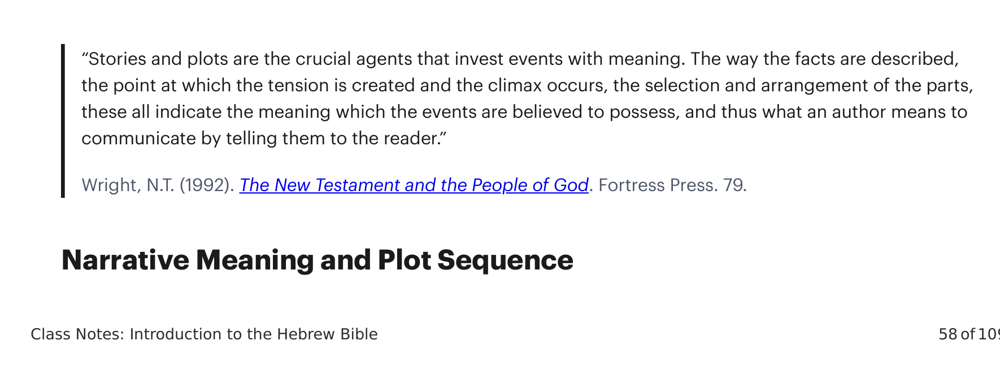
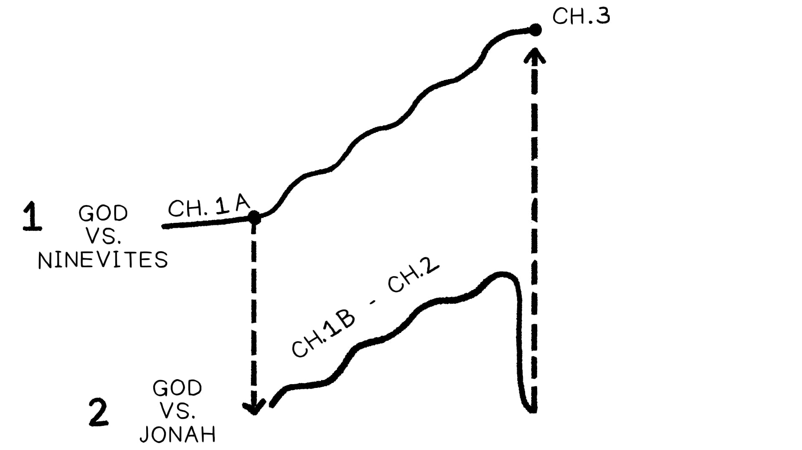
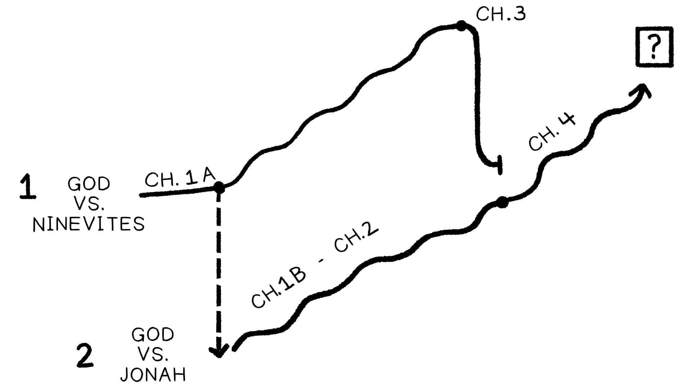

Enredo é o arranjo de personagens e eventos em uma sequência significativa a fim de comunicar o significado da história.Plot is the arrangement of characters and events into a meaningful sequence in order to communicate the meaning of the story.

“Histórias e enredos são os agentes cruciais que investem eventos com significado. A maneira como os fatos são descritos, o ponto em que a tensão é criada e o clímax ocorre, a seleção e o arranjo das partes, todos estes indicam o significado que se acredita que os eventos possuem, e assim o que um autor pretende comunicar ao contá-los ao leitor.” “Stories and plots are the crucial agents that invest events with meaning. The way the facts are described, the point at which the tension is created and the climax occurs, the selection and arrangement of the parts, these all indicate the meaning which the events are believed to possess, and thus what an author means to communicate by telling them to the reader.”
As narrativas comunicam identificando um evento particular como o problema que inflama a tensão e força os personagens para uma história de encontrar uma resolução. Com a seleção do problema e a maneira como os personagens o superam e encontram uma solução, esses pontos de enredo assumem e manifestam o conjunto de valores éticos do narrador, e são parte de como as histórias fazem reivindicações morais sobre o leitor.Narratives communicate by identifying a particular event as the problem that ignites tension and forces the characters into a story of finding a resolution. With the selection of the problem and the way characters overcome it and find a solution, these plot points assume and manifest the narrator’s ethical value set, and they are part of how stories make moral claims on the reader.
A mesma exata série de eventos pode carregar uma mensagem totalmente diferente baseada no conflito de enredo escolhido e na resolução.The same exact series of events can carry a totally different moral message based on the chosen plot conflict and resolution.
História #1: Billy é um menino em crescimento. Ele continua roubando biscoitos dos armários à noite. Sua mãe continua pegando-o, e assim ele desenvolve maneiras cada vez mais criativas de roubar os biscoitos.Story #1: Billy is a growing young boy. He keeps sneaking cookies from the cupboards at night. His mom keeps catching him, and so he develops more and more creative ways to steal the cookies.
História #2: Billy é um menino em crescimento. Ele continua roubando biscoitos dos armários à noite. Sua mãe fica cada vez mais preocupada, e eventualmente desenvolve um sistema de recompensas para que, se ele limpar seu quarto semanalmente, possa ganhar muitos biscoitos.Story #2: Billy is a growing young boy. He keeps sneaking cookies from the cupboards at night. His mom gets more and more concerned, and eventually develops a reward system so that if he cleans his room weekly he can earn lots of cookies.
Ler a narrativa bíblica requer a habilidade desenvolvida de rastrear o enredo para que obtenhamos a mensagem pretendida pelo autor.Reading biblical narrative requires the developed skill of tracking the plot so that we get the message intended by the author.
Vejamos a história de Jonas. Qual é o verdadeiro conflito de enredo?Let’s look at the story of Jonah. What is the real plot conflict?
Em Jonas 1, somos apresentados a dois conflitos de enredo:In Jonah 1, we are presented two plot conflicts:
Em Jonas 2, o segundo conflito de enredo é abordado conforme Jonas se aproxima da morte, ora a Deus e é libertado.In Jonah 2, the second plot conflict is addressed as Jonah nears death, prays to God, and is delivered.
Em Jonas 3, o primeiro conflito de enredo é abordado conforme os ninivitas se afastam do seu mal após a mensagem de Jonas.In Jonah 3, the first plot conflict is addressed as the Ninevites turn away from their evil after Jonah’s message.
Se a história terminasse no capítulo 3 (como acontece em muitos livros infantis), seria uma história limpa e arrumada: As pessoas devem se afastar do seu mal (como os ninivitas) e rebelião (como Jonas) e obedecer a Deus.If the story ended in chapter 3 (as it does in many children’s books), it would be a nice and neat story: People should turn away from their evil (like the Ninevites) and rebellion (like Jonah) and obey God.

Mas o capítulo 4 de Jonas problematiza tudo isso! Aqui descobrimos que, embora Jonas tenha obedecido tecnicamente, ele ainda abriga raiva, ressentimento e desprezo por Deus. Em outras palavras, o conflito de enredo #2 nunca foi realmente resolvido, e o livro termina com aquele conflito no ar.But Jonah chapter 4 problematizes all this! Here we find out that while Jonah has technically obeyed, he still harbors anger, resentment, and contempt for God. In other words, plot conflict #2 was never really resolved, and the book ends with that conflict up in the air.
O livro de quatro capítulos é sobre como o próprio povo de Deus pode se tornar o maior obstáculo para os propósitos de Deus no mundo!The four-chapter book is about how God’s own people can become the biggest obstacle to God’s purposes in the world!

As histórias bíblicas consistem em múltiplas linhas de enredo sobrepostas. O leitor deve distinguir entre a linha de enredo geral e os muitos subenredos que compõem os “episódios” de uma história maior. Mas não apenas isso, as linhas de enredo de nível inferior todas se conectam e contribuem para a linha de enredo maior.Biblical stories consist of multiple overlapping plotlines. The reader must distinguish between the overall plotline and the many subplots that make up the “episodes” of a larger story. But not only that, the lower-level plotlines all connect with and contribute to the bigger plotline.
Gênesis 15: Deus promete a Abraão que um filho virá do seu corpo e não de outro, e este descendente se tornará a bênção de Deus para as nações.Genesis 15: God promises Abraham that a child will come from his body and not another, and this descendant will become God’s blessing to the nations.
Gênesis 16: Sara e Abraão abusam sexualmente de Agar, uma escrava egípcia, em um esforço para produzir um filho por sua própria sabedoria, resultando no nascimento de Ismael.Genesis 16: Sarah and Abraham sexually abuse Hagar, an Egyptian slave, in an effort to produce a son by their own wisdom, resulting in the birth of Ishmael.
Gênesis 21: Abraão e Sara têm seu próprio filho, Isaque, e Sara invejosa exila Agar e Ismael. Assim Abraão os abandona ao seu destino, enviando-os para o deserto com uma pequena quantidade de água. Ele perde seu filho primogênito.Genesis 21: Abraham and Sarah have their own child, Isaac, and Sarah jealously exiles Hagar and Ishmael. So Abraham abandons them to their fate by sending them out into the desert with a small amount of water. He loses his firstborn son.
Gênesis 22: Deus “prova” Abraão exigindo de volta a vida de seu amado filho. Abraão finalmente entrega seu filho mais precioso e valorizado, e Deus o poupa provendo um substituto (o carneiro). É por isso que Deus diz que cumprirá sua promessa de Gênesis 12:3 (veja Gn. 22:15-18).Genesis 22: God “tests” Abraham by demanding back the life of his beloved son. Abraham finally surrenders his most precious and valued son, and God spares him by providing a substitute (the ram). This is why God says he will fulfill his promise from Genesis 12:3 (see Gen. 22:15-18).
Conforme traçamos o conflito de enredo através da história de Abraão, vemos como o autor bíblico estabeleceu as perguntas que impulsionam a narrativa adiante. O conflito de enredo abrangente de Gênesis 12-22 é criado pela escolha de Deus de Abraão. Deus se comprometeu a espalhar sua bênção divina a todas as nações através deste homem e de sua esposa. Mas Abraão e Sara realmente se tornam o problema que Deus tem de superar!As we trace the plot conflict through the Abraham story, we see how the biblical author has set up the questions driving the narrative forward. The overarching plot conflict of Genesis 12-22 is created by God’s choice of Abraham. God has committed to spreading his divine blessing to all nations through this man and his wife. But Abraham and Sarah actually become the problem that God has to overcome!
“A primeira, e única realmente rígida, regra na teoria literária é que os textos devem ser lidos do início ao fim. O significado de uma palavra não é determinado por sua definição, mas por seu contexto. Assim também o significado de uma única história só é determinado pela relação de todos os seus elementos com o texto todo.” “The very first, and only really rigid, rule in literary theory is that texts must be read from beginning to end. The meaning of a word is not determined by its definition, but by its context. So also a single story’s meaning is only determined by the relationship of all its elements to the whole text.”
Quais são algumas de suas principais lições desta discussão sobre enredo bíblico e subenredo no livro de Jonas?What are some of your main takeaways from this discussion on biblical plot and subplot in the book of Jonah?